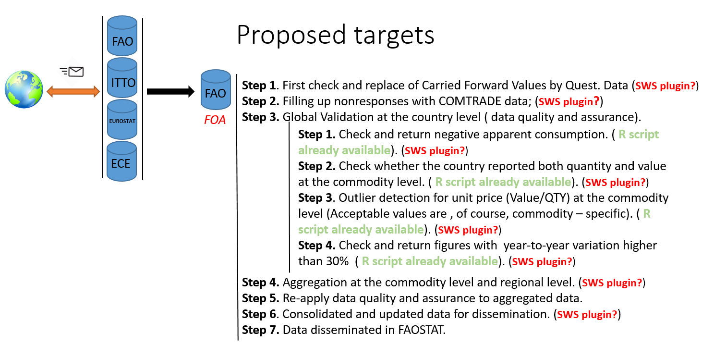

Proposed automations
As one sees, in many steps of the Forestry workflow, the human interference is patently present. While it is indisputable that deep domain expertise cannot be easily replace by algorithms, the ESS - SWS team identified data processing layers where automation can be applied without decreasing the importance of FOA domain knowledge interference (in red).

Figure 5: Proposed migration of FOA data processing steps (in red).